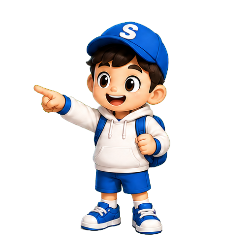

설명이 아이에게
맞춰서 바뀌어요
같은 문제라도 아이의 오답 이유와 말투, 속도에 따라 다른 비유와 힌트를 건넵니다.
1:1개인 맞춤 튜터
쉽게 이해하고, 오래 기억하고, 문제에 스스로 적용하도록.
수학착착은 아이의 현재 학습 상태에 맞춰 설명의 순서와 난이도를 바꿔요.



정답만 알려주지 않아요. 아이가 막힌 지점을 찾아, 이해한 뒤 스스로 다시 풀 수 있게 도와줍니다.
같은 문제라도 아이의 오답 이유와 말투, 속도에 따라 다른 비유와 힌트를 건넵니다.
공식 암기에서 끝나지 않고, 다음 문제에 꺼내 쓰는 연습까지 이어져요.
실수를 실패가 아닌 다음 힌트로 바꿔, 다시 시도할 용기를 줍니다.
오늘 배운 것과 다음 추천 학습을 한눈에 확인할 수 있어요.
한 가지 방식이 막히면 다른 표현으로 바꿔 설명합니다.
수학착착의 학습 루프는 정답을 빠르게 맞히는 대신, 아이가 자기 언어로 설명하고 새로운 문제에 적용하는 순간까지 봅니다.
내 학습 루프 확인하기학년과 고민을 알려주면, 지금 필요한 개념부터 부담 없이 시작할 수 있도록 추천해드려요.
아이의 현재 상태와 다음 학습을 짧고 선명하게 확인할 수 있습니다.
초등 3~6학년을 기준으로 설계했어요. 아이의 현재 수준을 먼저 확인해 학년과 다른 난이도에서도 시작할 수 있습니다.
정답보다 먼저 생각의 방향을 잡는 힌트를 줍니다. 아이가 충분히 시도한 뒤에는 풀이를 함께 정리해요.
아니요. 아이가 혼자 학습할 수 있도록 설계했고, 부모님은 리포트에서 성장 흐름을 확인하면 됩니다.
평가나 등수를 매기는 시험이 아닙니다. 지금의 출발점을 찾기 위한 짧은 대화형 진단이에요.
아이에게 맞는 첫 설명부터 무료로 만나보세요.